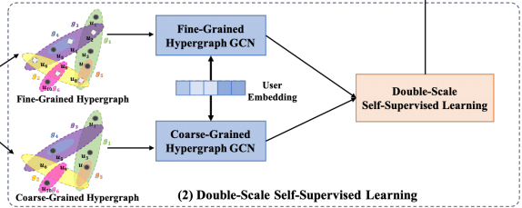
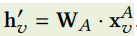
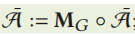
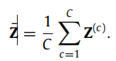
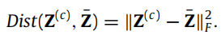

Hey there 👋
I'm 叶晓艺
Xiaoyi Ye
专注于 Golang服务端研发 与 人工智能 的开发者
具备扎实的后端开发基础与AI算法研究经验，致力于构建高性能、高可用的分布式系统。 目前在香港城市大学攻读人工智能硕士学位，积极寻找后端开发工程师的实习与全职机会。

Hey there 👋
Xiaoyi Ye
专注于 Golang服务端研发 与 人工智能 的开发者
具备扎实的后端开发基础与AI算法研究经验，致力于构建高性能、高可用的分布式系统。 目前在香港城市大学攻读人工智能硕士学位，积极寻找后端开发工程师的实习与全职机会。
负责基于 Golang + Kafka + Flink 构建实时论文数据处理链路，搭建流处理引擎实现数据实时清洗与特征提取。


网络社交表情包合成系统
基于 Golang + Kafka + Redis 的高可用表情包合成平台，实现动态降级与混合推送架构。
基于Golang的聊天系统
基于 WebSocket 的实时通信系统，接入大模型 API 实现智能聊天功能，日均处理 10 万+ 消息。

基于物联网的智能教师
基于 Arduino 的钢琴学习辅助系统，将 MIDI 转化为硬件控制参数，实现可视化提示。
提出异构超图建模方法，解决传统方法只聚合本地低阶信息而丢失全局高阶结构信息的问题。






提出异构原子-基序图表示方法，设计符合分子内部作用机制的信息传递策略，提高分子表征算法的泛化能力。
基于时空图分析技术预测车流量与行人流量，将路网抽象为时空图，融合邻域图卷积模块进行预测。
基于 U-Net 深度学习模型实现农作物虫害识别，测试集正确率达到 100%。
基于 RNN、LSTM、Transformer 等模型架构的音乐生成系统，效果比基线提高 27.15%。


全国二等奖（队长）
省级银奖
全国三等奖
省级立项一项，校级一项